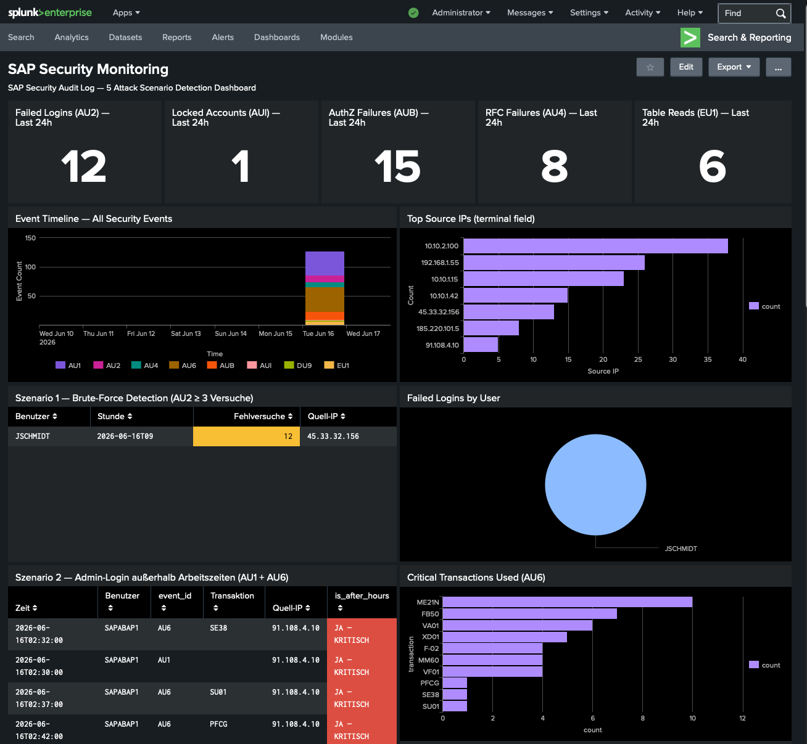

Überblick
SAP-Systeme speichern die sensibelsten Daten eines Unternehmens — Passwort-Hashes, RFC-Credentials, Rollen und Buchungsdaten. Trotzdem fehlt in vielen SOC-Teams ein dediziertes SAP-Monitoring-Dashboard. In diesem Projekt habe ich 128 realistische SAP Security Audit Log Events über 5 Angriffsszenarien simuliert und in einem einzigen Splunk-Dashboard sichtbar gemacht.

// SAP Security Monitoring Dashboard — Splunk Enterprise 10.2.3 — Home Lab
Lab-Architektur
Das Dashboard läuft auf dem gleichen Home-SOC-Lab wie meine anderen Analysen: Splunk Enterprise in einem Docker-Container, Log-Ingestion über den HTTP Event Collector (HEC) mit einem Python-Skript, das 128 SAP Audit-Events über 5 Szenarien generiert.
SAP Event-IDs im Dashboard
Das SAP Security Audit Log (Transaktion SM20) verwendet standardisierte Event-IDs. Das Dashboard überwacht folgende Events:
| Event-ID | Bedeutung | Szenario | Severity |
|---|---|---|---|
AU2 |
Fehlgeschlagener Dialog-Login | Brute-Force | MEDIUM |
AUI |
Benutzer gesperrt | Brute-Force Ergebnis | HIGH |
AU1 |
Erfolgreicher Dialog-Login | After-Hours Admin | LOW |
AU6 |
Transaktion gestartet | Kritische TCodes | LOW |
AUB |
Berechtigungsprüfung fehlgeschlagen | Privilege Escalation | HIGH |
AU4 |
Fehlgeschlagener RFC-Login | Externer RFC-Angriff | MEDIUM |
EU1 |
Generischer Tabellenzugriff (Lesen) | Datenexfiltration | HIGH |
Dashboard-Aufbau
Das Dashboard ist in 7 Zeilen strukturiert — von oben nach unten: KPI-Counters, Überblick-Charts und dann ein Panel pro Angriffsszenario.
Fünf Echtzeit-Zähler für AU2, AUI, AUB, AU4 und EU1 — Farbwechsel auf Rot wenn Schwellenwert überschritten
Gestapeltes Säulendiagramm aller Events nach event_id gruppiert — Last 7 Days, 1h-Auflösung
Top-10 Quell-IPs aus dem terminal-Feld — sofort sichtbar welche IP am aktivsten ist
AU2-Events nach Benutzer + Stunde gruppiert — Alarm wenn ≥ 3 Fehlversuche in einer Stunde
AU1/AU6-Events zwischen 22:00–06:00 Uhr — rote Markierung für "JA — KRITISCH"
AUB-Events pro User — Alarm wenn ≥ 5 Berechtigungsfehler (AUB Storm)
AU4-Fehler gruppiert nach Quell-IP und RFC-Programm
EU1-Events: Summe der gelesenen Zeilen pro User/Tabelle — USR02, RFCDES als kritische Indikatoren
Alle Events der letzten 30 Tage — Severity-Farben HIGH/MEDIUM/LOW/INFO
SPL-Abfragen — Kernsätze
// Szenario 1 — Brute-Force
// Szenario 2 — After-Hours Login
// Szenario 3 — AUB Storm
// Szenario 5 — Datenexfiltration
Wichtige Erkenntnisse
Field-Mapping: SAP-Events im Splunk HEC-Format verwenden terminal
für die Quell-IP (nicht src_ip),
transaction für TCode (nicht transaction_code)
und rows_read für gelesene Zeilen (nicht records_read).
Immer zuerst mit | fields * prüfen.
EU1 + USR02/RFCDES: Wenn ein Benutzer die Tabellen
USR02 (Passwort-Hashes) oder
RFCDES (RFC-Credentials) ausliest,
ist das ein sofortiger P1-Incident — unabhängig von der Anzahl der Zeilen.
Dashboard als Vorlage: Das Simple XML liegt im Repository und kann
direkt in jede Splunk-Instanz importiert werden — über
Settings → User Interface → Views → Import
oder via REST API.